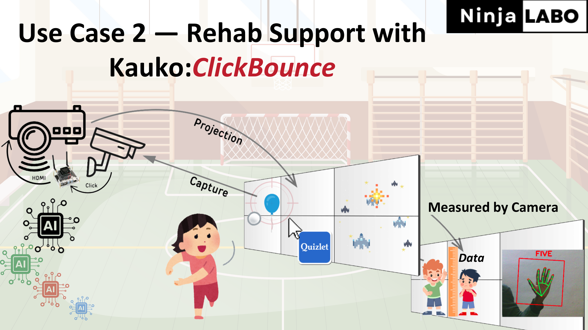
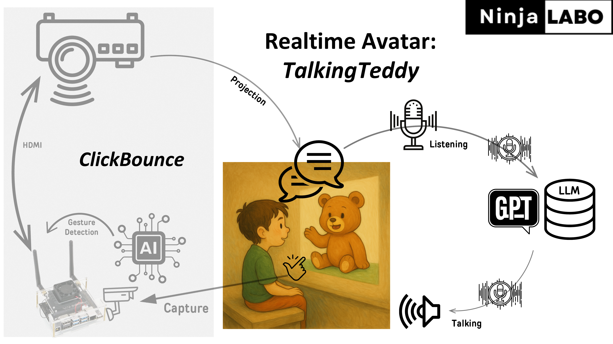
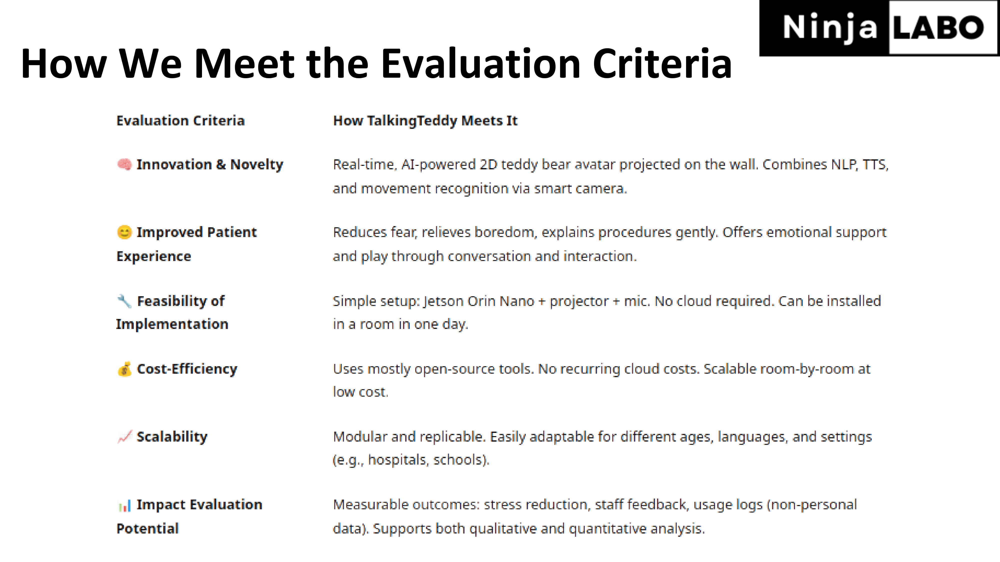
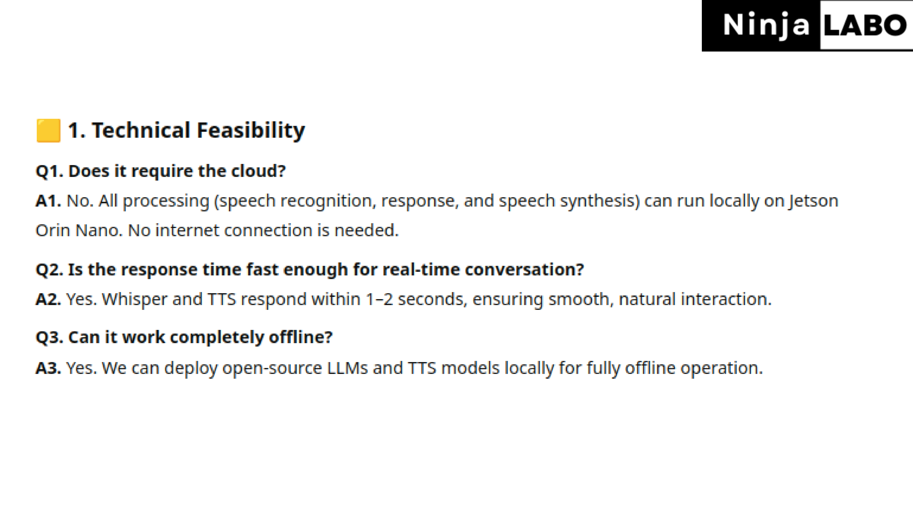
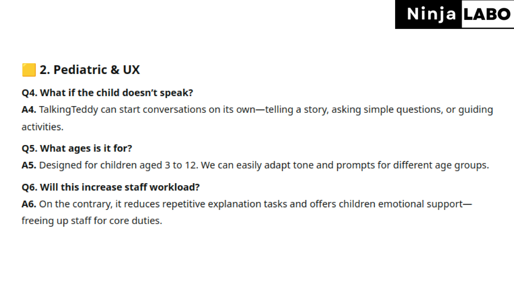
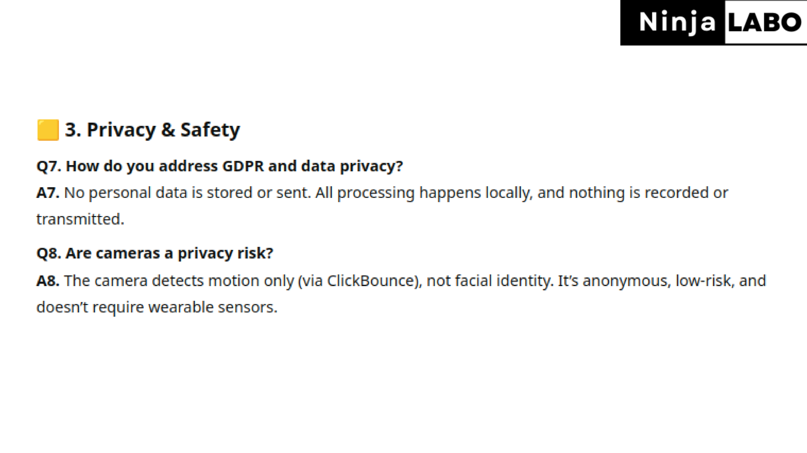
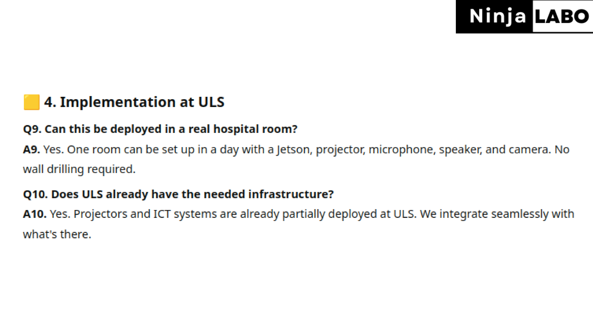
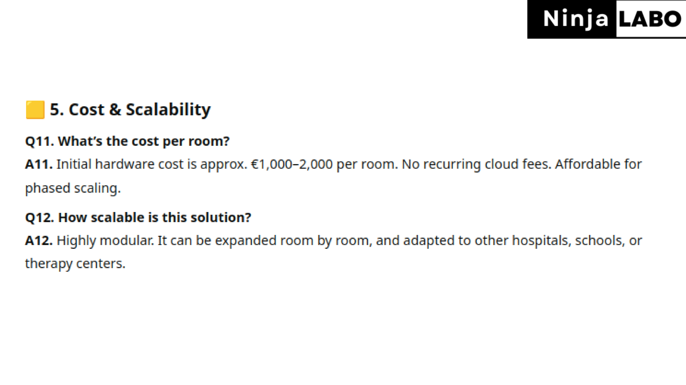
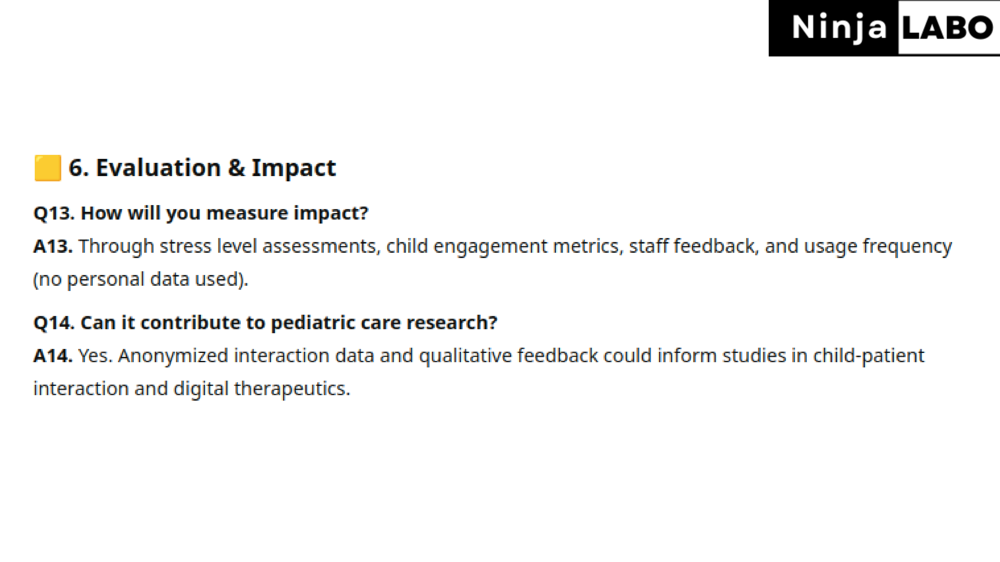

TalkingTeddy: The Future of Pediatric Patient Care
Real-time Interactive Projection for Children
🚀 Introducing TalkingTeddy: AI at the Edge, in a Hug
NinjaLABO is pushing the boundaries of edge AI with its latest creation: an AI-powered teddy bear that can talk, feel, and respond to human interaction—all running entirely offline. This project showcases NinjaLABO’s commitment to “Cloudless AI,” delivering real-time, privacy-preserving intelligence in a cuddly, embedded form factor.
The Talking Teddy integrates sensory inputs to detect touch and context, enabling it to pause when spoken to and even recognize when it’s being held. This blend of natural interaction and local processing exemplifies the company’s mission to bring advanced AI to resource-constrained environments without relying on cloud infrastructure.
This initiative not only demonstrates the potential of TinyML in consumer products but also opens up new possibilities for interactive, secure, and responsive AI applications at the very edge.
 Today, I want to introduce our proposal, AI avatar, named “TalkingTeddy”.
Today, I want to introduce our proposal, AI avatar, named “TalkingTeddy”.
It’s an interactive projection on the wall in the hospital. It’s more than decoration, it talks with kids in real time and reacts to their physical movements. It uses a projector, camera and mini computer on the right side. This helps children feel calm, engaged, and motivated for their assesments or treatments. And this should reduce staff workload and improve the overall hospital experiences.
 3 challenges:
3 challenges:
- Kids often feel scared before procedures.
- Kids can easily get bored during long stays.
- Kids often struggle to understand given instructions.
Those things can take time and slow down the staff efficinecy. We believe technology can change these tough moments into the better experience.
 Here, we introduce our Interactive Projection System:
Here, we introduce our Interactive Projection System:
This system is built with 3 components:
A projector, Camera and mini computer with AI, seen on the left side.
A projector to show image on the wall. Here, it’s a animated Teddy Bear image.
A camera to capture movements on the wall or kid gestures.
A mini computer to run AI locally to recognize motions and interactions in front.
In addition to them, on the right side, with a mic and speaker, this Avatar can talk with kids, using ChatGPT or local AI on the backend.
 Here, we introduce our Interactive Projection System:
Here, we introduce our Interactive Projection System:
This system is built with 3 components:
A projector, Camera and mini computer with AI, seen on the left side.
A projector to show image on the wall. Here, it’s a animated Teddy Bear image.
A camera to capture movements on the wall or kid gestures.
A mini computer to run AI locally to recognize motions and interactions in front.
In addition to them, on the right side, with a mic and speaker, this Avatar can talk with kids, using ChatGPT or local AI on the backend.
 So what kind of use cases:
Use Case 1:
Chatting with the avatar helps kids relax and forget about scary treatments.
During exams, it helps them stay focused — either on the procedure or on something fun, being distracted.
For physical assessments, the avatar gives clear, step-by-step instructions on time.
With such smooth communication, medical staff can reduce their workload and they can focus more on care itself.
This might be not be restricted to child use cases but also this can be extended to support adult patients as well. In that case, we probably need to change Teddy Bear avatar to something else.
 Use Case 2 is gamified rehabilitation. This is making use of our existing project, named KauKo: ClickBounce.
Currently this system is being piloted in schools in Malminkartano this spring.
It’s an interactive game that encourages physical movement by combining wall projection with AI camera inputs.
How it works: 1. A projector shows the APP on the wall. 2. A child throws a ball at the wall. 3. Camera cptures each ball hit ting on the wall. 4. AI detect a ball hit as a “mouse click” to the input for the running App.
Kids throw balls, run, catch, and repeat by playing a game.
For example, a game can be simple baloon shooting, Quizlet for educational purpose or any mouse click apps.
ClickBounce can be adapted for medical use, like some physical assesments.
Such new AI features can be added via software updates — without any hardware changes.
 For realtime avatar, it uses the same system as ClickBounce, shown on the left side, a projector, camera, and mini computer with AI. You can consider “TalkingTeddy” as another app of “ClickBounce”.
For realtime avatar, it uses the same system as ClickBounce, shown on the left side, a projector, camera, and mini computer with AI. You can consider “TalkingTeddy” as another app of “ClickBounce”.
To support real-time conversation, we simply add a mic and speaker on the right side. The system can use ChatGPT or a local LLM for GDPR compliance.
For data collection, at the bottom right, conversation logs can be used for future research or fine-tune LLM.
 Our commercializsation path, consists of 6 stages.
Our commercializsation path, consists of 6 stages.
ClickBounce will be tested in schools this Spring.
We’ll introduce this ClickBounce in the hospital to promote physical activity or some medical assesments.
We’ll add a new feature: realtime avatar, TalkingTeddy, running on the same hardware setup as ClickBounce.
We’ll offer this as a preinstalled edge device package.
For privacy, ChatGPT can be replaced with a local LLM, ensuring full GDPR compliance.
We’ll deliver new AI features through our subscription — like Netflix, we deliver regular updates — new AI features that evolve over time via subscription.
Why Uusi lastensairaala?
ULS already supports creative therapies like art to ease pain and anxiety. Realtime AI avatar, TalkingTeddy, will be built on this spirit. This time it uses AI to bring comfort, connection and efficiency.
Imagine — one day, AI Avatar will be talking in real time with every child, like a friend by their side, while a doctor and a nurse are focusing on their medical work.
 Thank you





